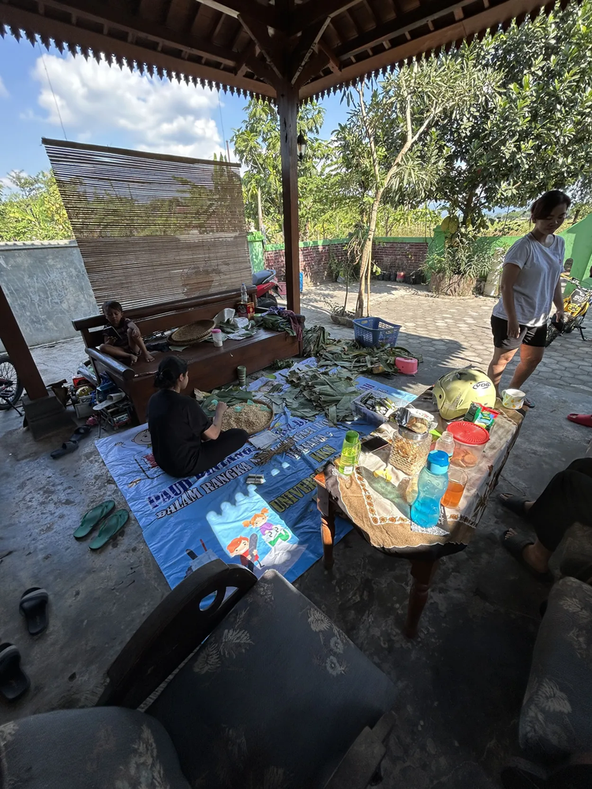
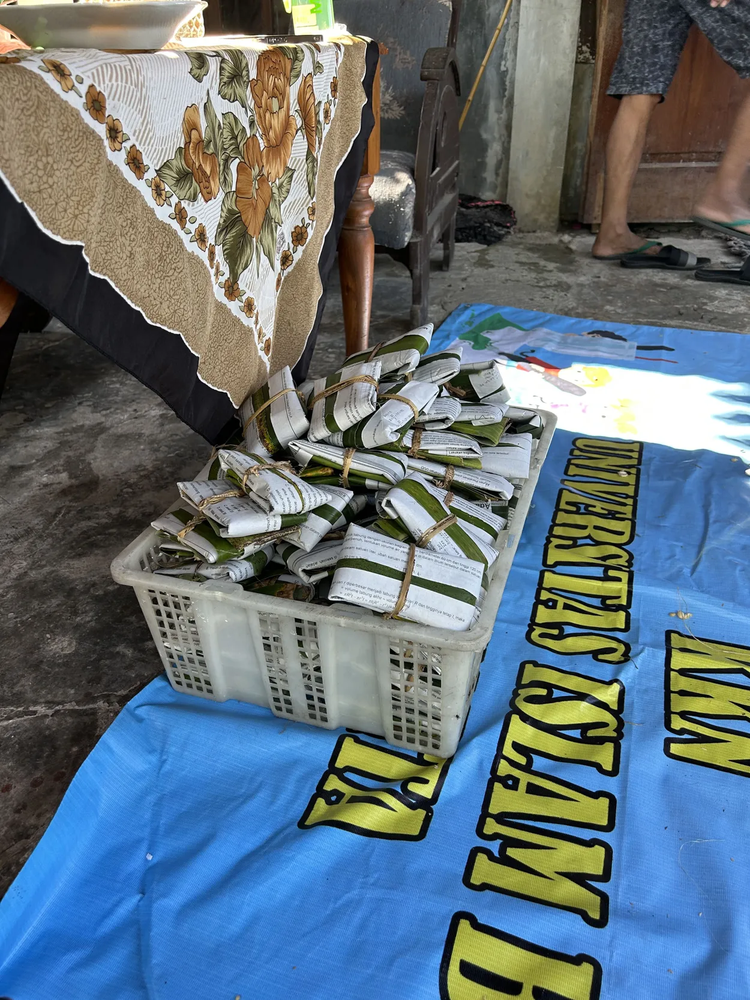

🌱 Sentral Tempe Kajen
Pusat produksi sentral tempe yang berkualitas,lezat betul.
Tempe Daun Pisang Alami

Tempe Ibu Lestari
Memproduksi tempe bungkus daun pisang asli tanpa bahan pengawet.
Aroma khas dan rasa lebih gurih.

